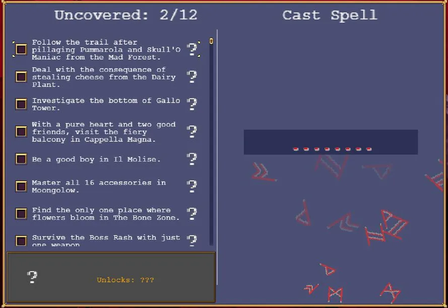
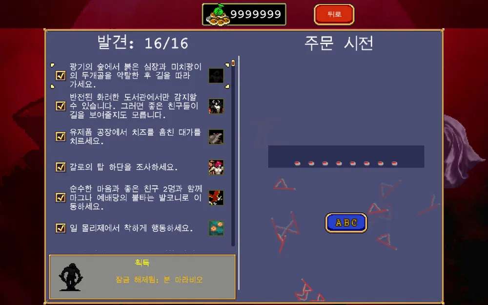
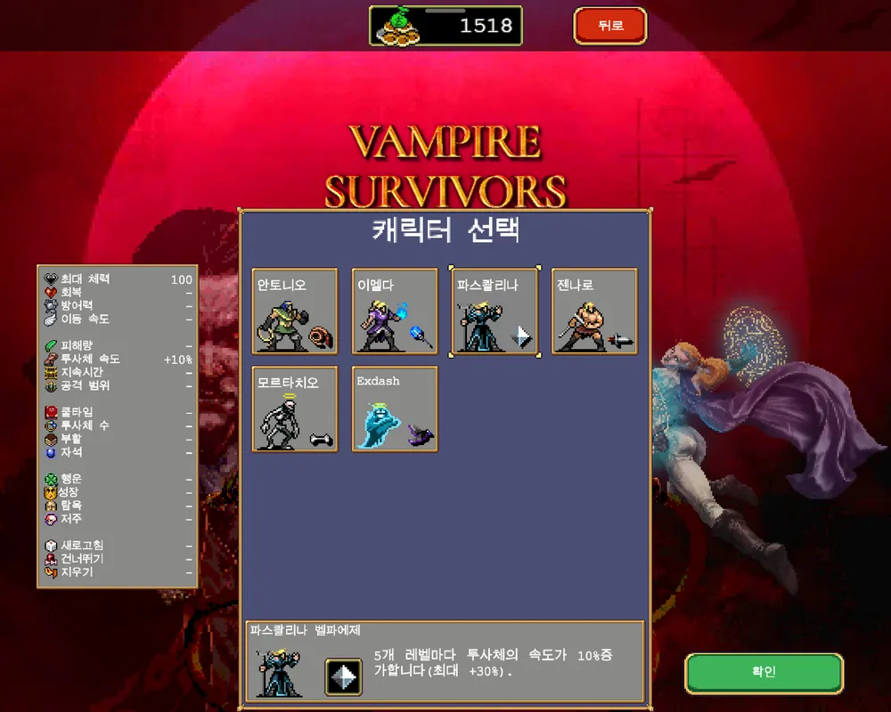

Vampire Survivors/비밀

1. 개요
 |  |
'비밀'(Secret) 메뉴는 비밀 목록과 캐릭터, 스테이지, 유물 등 을 잠금 해제하는 치트 코드를 입력하는 기능을 제공한다. '비밀' 메뉴에서는 왼쪽 창에 미스터리한 문장으로 히든 캐릭터를 해금하는 힌트를 알려주고, 오른쪽 창에는 특정 주문(치트 코드)을 입력할 수 있도록 되어있다.
DLC Legacy of the Moonspell(22년 12월) 출시 이후에 추가된 치트코드는 링크 참조.
1.1. 해금 방법
- 일반 스테이지 3개의 하이퍼 모드를 열어 챌린지 스테이지 뼈의 대지 잠금 해제.
- 뼈무더기 처치 후
 모르베인의 금지된 두루마리 획득.
모르베인의 금지된 두루마리 획득.
2. 비밀 목록
2.1. 미스터리
- 광기의 숲에서 붉은 심장과 미치광이의 두개골을 약탈한 후 길을 따라가세요.
마라비오 해금방법
- 반전된 화려한 도서관에서만 감지할 수 있습니다. 그러면 좋은 친구들이 길을 보여줄지도 모릅니다.
- 에우다이모니아 M.을 클리어한 뒤 미스터리 항목이 추가된다.
아바타 해금방법
- 유제품 공장에서 치즈를 훔친 대가를 치르세요.
민나 해금방법
- 갈로의 탑 하단을 조사하세요.
레다 해금방법
- 순수한 마음과 좋은 친구 2명과 함께 마그나 예배당의 불타는 발코니로 이동하세요.
코스모 해금방법
- 일 몰리제에서 착하게 행동하세요.
페피노 해금방법
- 뼈의 대지에 꽃이 피어나는 유일한 장소를 찾으세요.
가인스 해금방법
- 무기 하나만으로 보스 래쉬에서 생존하세요.
교룬톤 해금방법
사신으로 점수를 획득하세요.- 원문인 "Settle the scroe with ~" 는 "~에게 보복하다"라는 스포츠 용어이다. 따라서 사신에게 복수하십시오라고 번역해야 옳다.
붉은 죽음의 가면 해금방법
- 1) x-x1viiq 주문을 시전하세요.
엑스대시 해금방법
- 2) 붉은색이 아닌 사신에게 어퍼컷을 날리세요.
토스티 해금방법
- 3) 그냥 도움을 요청하기만 하면 되는 때도 있습니다.
스미스 해금방법
- 이전에 소유했던 관 아래를 살펴보세요.
무작위 해금방법
- 작은 다리에서 요란한 천둥의 근원을 찾아보세요.
스코어제이 오니 해금방법
2.2. 마법 주문
2.2.1. 장난
- spinnn
화면 회전
- kamiki
오솔레미오 캐릭터로 천상의 꽃, 위대한 기념제, 체리폭탄 및 클로버를 착용한 상태로 최근에 플레이한 스테이지에서 자동으로 게임이 시작된다.
- spoopyseason
모르타치오, 야타 카발로, 비앙카 람바, 오'솔레 미오 중 하나의 캐릭터로 뼈의 대지에서 게임을 시작하며 게임을 완전히 끄기 전까지 캐릭터 스킨 및 기본 무기 스킨이 으스스하게 바뀐다.
- onjupiter
목성처럼 중력이 증가한다. 최근 플레이한 스테이지 + 캐릭터로 맵이 점점 위로 올라가고 반대로 모든 드롭 아이템은 바닥으로 떨어지는 상태로 게임 시작.
판정이 상당히 유별난데, 무기의 경우 죽음의 나선, 광산수레와 같이 투사체 판정의 무기의 경우 점점 바닥으로 내려가며 승리의 검 이펙트 역시 바닥으로 내려가 시그마의 경우 투사체 속도가 빨라서 적을 명중시키기 어려워진다.
금반지, 은반지, 보스 러쉬등에 있는 고정되어있는 아이템의 경우 움직이지 않으며 시곗바늘로 몬스터를 고정시키거나 에초에 고정되어있는 몬스터의 경우 바닥으로 점점 내려간다.
바닥으로 떨어지는 속도는 점점 증가하기 때문에 일몰리제/달빛 같은 맵의 경우 유사 똥피하기 게임이 되어 버린다.
- andmars
화성처럼 중력이 감소한다. 최근 플레이한 스테이지 + 캐릭터로 맵이 점점 아래로 내려가고 반대로 모든 드롭 아이템은 위로 떠오르는 상태로 게임 시작.
위의 경우와는 반대의 경우로 된다.
2.2.2. 스테이지
하이퍼모드가 존재하는 스테이지는 하이퍼모드도 자동으로 해금된다.
- everywhere
모든 일반 스테이지 해금
- relaxenjoylife
일 몰리제
- honesty
달빛
- dotgogreenacres
푸른 초원
- rottingpizza
뼈의 대지
- peakgamedesign
보스 러쉬
- recyclethetower
작은 다리
- iwanttoseeitagain
Holy Forbidden 입장
- recycletheforest
박쥐 나라
- recyclethelibrary
아스트랄 계단
- buriedinthesnow
화이트아웃
- jumptheshark
스페이스54
- divineassault
실험실
- thenextstopis
카를로 카트
- forbiddenbox
1665호실
- coopwhen
협동 농장
2.2.3. 캐릭터
- noneladonna
아르카
- vivaladonna
포르타
- superladonna
라마
- strongestcharacter
포
- faschiuma
클레리씨
- bioparco
돔마리오
- accidenti
크로치
- crystalmakeup
크리스틴
- flymetothemoon
푸냘라
- thetwoassassins
지오반나
- feldschlacht
포페아
- ifeellovevenus
콘체타
- yattapanda
카발로
- carramba
람바
- reset
오솔레미오
- languorino
암브로조 경
- waitreaction
갈로
- quandolodicelui
디바노
- paradigmshift
지아순타
- exdashexoneviiq
엑스대시 (메인 메뉴에서도 작동한다.)
- tramezzini
토스티 (엑스대시를 먼저 해금해야 한다.)
- maybeimastallion
스미스
- igottagettotheedgeofsoul
무작위
- fettinepanate
마라비오
- foldinthecheese
민나
- iwillneverletyouforgetaboutme
레다
- lhovistoio
코스모
- pinociampino
페피노
- earrivatolarrotino
트라우저
- rightninetyseven
미싱노
- highfive
가인스
- secondevolution
교룬톤
- ablasphemousmockery
레드데스
- allatonce
시그마
- kalvasflam
아바타
- notsureitsthunder
스코어제이오니
- rescuefromtheshadows
로즈
- cygnusmagnus
쉬문 에타
- bimbumbam
배트 로버트
- thegoodguy
우주 친구
- shesawit
산타 라돈나
- blunderingfool
교룬틴
- whydithavetobebats
배트 배트 배트
- allegedcannibal
가제보
- loveknowsnobounds
스페이스 데트
2.2.4. 무기/장신구
- everything
모든 무기와 장신구 해금 (노란색 신호를 통해 해금되는 무기/장신구 제외)
2.2.5. 유물
- thisshouldhavebeenunlockedbydefault
엄숙한 마도서 해금
- thistooshouldhavebeenunlockedbydefault
괴물 도감 해금
- leadmetothecheese
은하수 지도 해금
- thankelrond
매직 뱅거 해금
- timecompression
마녀의 눈물 해금
- eggseggseggs
유리 가면 해금
- teleportustomars
코주부 안경 해금
- ihaveseenitihaveseenitihaveseenitihaveseenitihaveseenitihaveseenitihaveseenit
노란색 신호 해금
- icanhearthecriesofcaptainplanet
위대한 복음 해금
- randomazzami
란도마조 해금
- freezearrow
그라시아의 거울 해금
- dootdoot
일곱 번째 나팔 해금
Atlas Gate - "tolovetoshine"
Chaos Malachite - "gottagofast"
Chaos Rosalia - "coldwaterhotwater"
Chaos Altemanna - "chapatribe"
Apoplexy - "tengillesbalm"
Antidote - "duraistruth"
Trisection - "haeralisploy"
Brave Story - "lugrianstale"
Randomazzo and Sarabande of Healing - "randomazzami"
Darkasso and Moonlight Bolero - "darkassami"
Roast Chicken with a Clock in the Middle - "yeoldeshoppe"
2.2.6. 아르카나
- ilmatto
게임 킬러
- ilbagatto
쌍둥이 자리
- lapapessa
황혼의 진혼곡
- limperatrice
공주의 비련
- limperatore
각성
- ilpapa
혼돈이 가득한 어두운 밤
- randomazzami
치유의 사라반드
- ilcarro
푸른 강철의 의지
- laforza
광기의 그루브
- leremita
신성한 혈통
- laruota
근원
- lagiustizia
진주의 왈츠
- lappeso
한도초과
- lamorte
사악한 계절
- latemperanza
수정 감옥
- ildiavolo
황금 디스코
- latorre
절단
- lastella
잃어버린 그림
- laluna
환상의 춤
- ilsole
불의 심장
- ilgiudizio
고요한 옛 성역
- ilmondo
블러드 아스트로노미아
2.3. 커맨드
'비밀 메뉴가 아닌' 메인 화면이나 게임 플레이 도중 또는 특정 커맨드를 입력하면 히든 특전이 존재한다. 느리게 입력하면 반응하지 않아서 최대한 빠르게 입력해야 한다. 게임의 외적인 부분에서 많이 차용한 악마성 시리즈에 대한 헌정인 듯한 전통의 코나미 커맨드 등을 수록하였다. 커맨드의 중복 사용은 불가능하다.
 |
-2022년 12월 9일에 출시한 안드로이드버전에 키보드를 연결하고 커멘드 사용시 커멘드가 적용된다. |
- ↓ + ENTER
토스티 해금용 커맨드. 자세한 해금 방법은 토스티 캐릭터 문단 참고.
- PET
오솔레미오 플레이 시 게임당 한번 캐릭터의 체력을 모두 회복해준다.
- spam spam spam humbug
스미스 해금용 커맨드. 자세한 해금 방법은 스미스 캐릭터 문단 참고.
- randomazzami
아르카나 + 치유의 사라반드 해금용 커맨드.
- aintnobodygottimeforthat
게임 킬러 + 광기의 그루브 + 한도초과 + 황금 디스코 + 고요한 옛 성역 해금용 커맨드.
3. 기타
마법 주문으로 아르카나나 아이템을 해금해도 컬렉션에 정상적으로 저장되므로 퀸 시그마를 더욱 쉽게 얻을 수 있다.